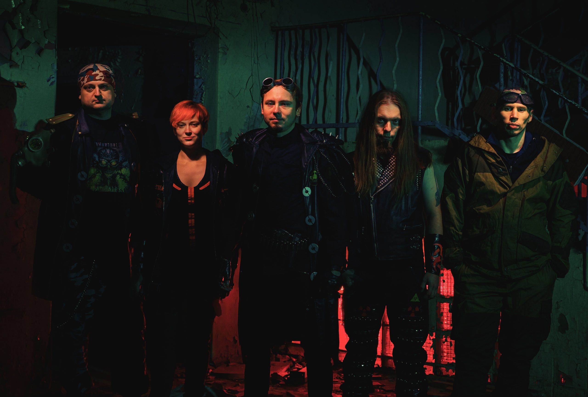
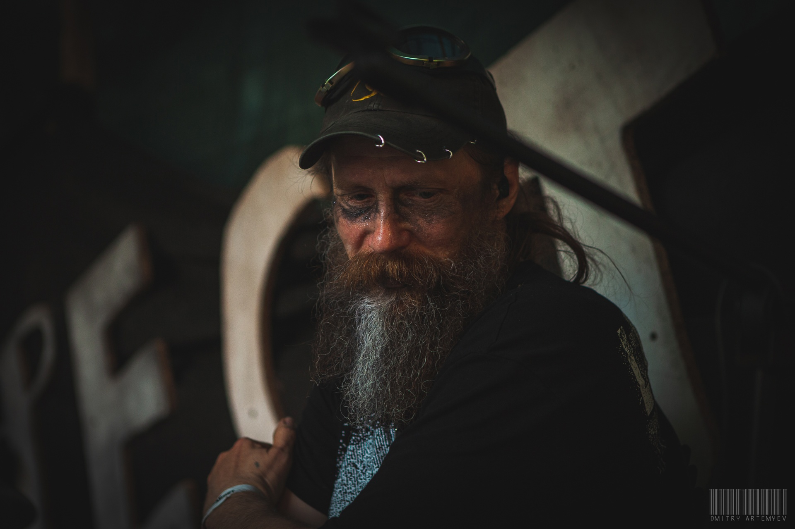
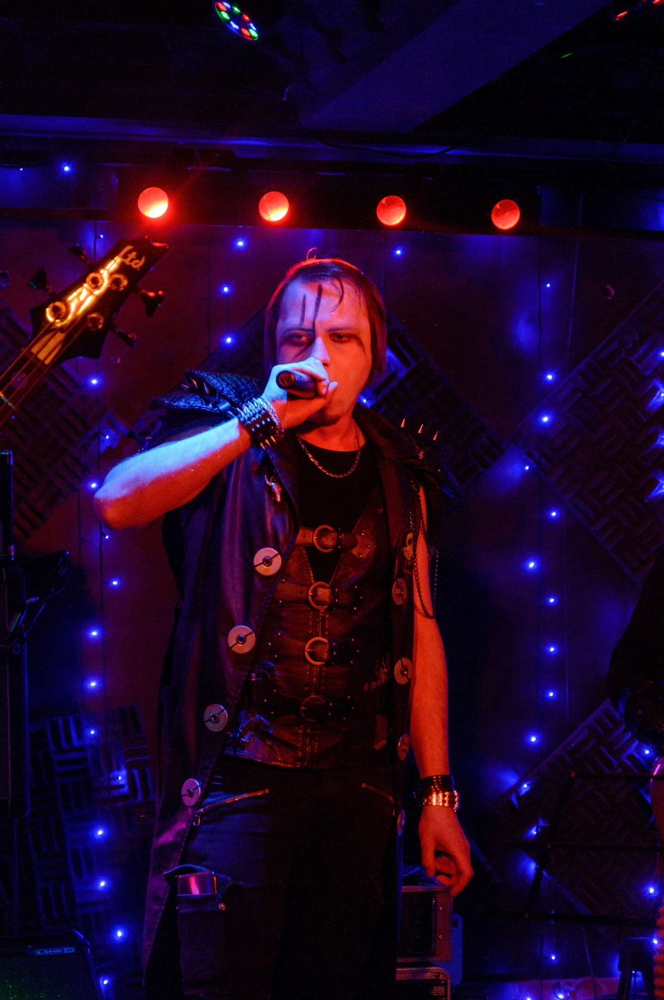
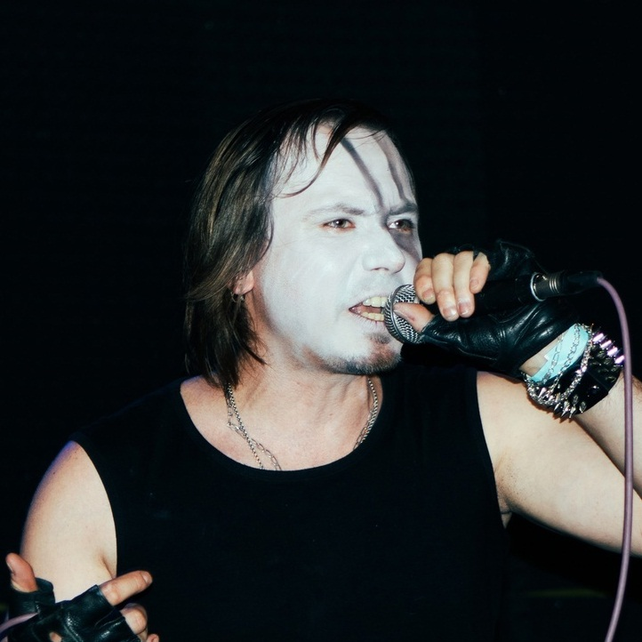

Официальный сайт группы Выжившие
25.05.2023
Презентация нового диска группы GalaxY состоится 22 июля в рамках фестиваля Mic Label Fest
Выход юбилейного переиздания альбома группы GalaxY, о котором сообщалось ранее, уже не за горами. Не так давно была объявлена официальная дата готовящегося релиза. Новый диск будет представлен публике на грядущем арт фестивале «Mic Label Fest» 22 июля в Москве. В рамках презентации можно будет не только приобрести свою копию альбома, но и пообщаться с музыкантами группы (Павлом Нериком - вокал, гитара; Селеной Фрост - бэк-вокал; и Андреем Вайтом - синтезаторы), которые впервые за 10 лет вновь выйдут на сцену и даже исполнят вживую пару песен из своей дискографии. Компанию музыкантам на сцене составят такие маститые исполнители в жанрах индастриал, дарк-электро и EBM, как Necro Stellar, Ultimate Soldier, Invisible Devastation, CL-20, Lamia Morra, Boo-Boo, Chem, Danger to Medulla, Van Roy Asylum и Perfecthate. Ну и конечно проект Holocoder, который отметит на сцене своё 20летие.
Приглашаем всех любителей хорошей электронной музыки посетить данное мероприяти. Ждём Вас в клубе Mezzo Forte по адресу 1-я Останкинская улица, дом 53, метро ВДНХ.


История
GalaxY — музыкальная группа из Волжского. Была основана в 2004м году двумя людьми: Павлом Нериком и Андреем Степановым. Вскоре к коллективу присоединился и Михаил И. В таком составе группа дебютировала на своём первом живом выступлении, которое состоялось 25 января 2005го года. Эта дата считается официальным днём рождения GalaxY.
После записи ряда синглов, в 2007м году группа выпустила свой первый демо-альбом, получивший название «Space Trash». Музыкальный стиль GalaxY тех лет можно определить, как ньювейв с уклоном в индастриал-рок. Большая часть композиций была инструментальной, а их электронное звучание было наполнено романтикой космоса, трагизмом ничтожности человека во вселенной. Те немногие песни, что имели слова, в форме постиронии высмеивали современные пороки общества, перенося их в декорации космических приключений далёкого будущего. Но не смотря на то что эта тема яркой лентой прошла через все композиции, альбом получился не слишком концептуальным. Вероятно потому что он был записан в период становления коллектива, когда ещё группа чётко не определила для себя направление творчества.
После завершения концертных мероприятий в поддержку вышедшего альбома, коллектив покинул Михаил И., и у группы сформировался состав из двух человек, продлившийся самый долгий период. Вскоре на подходе появился второй альбом группы, получивший рабочее название «Favorit perversions», который обещал быть более электронным и тяжёлым. Команда избавилась от поп-составляющей своего звучания. Благодаря новому гитарному процессору звук гитар стал более плотным и качественным, а обновленные синтезаторы позволили разнообразить клавишные партии новыми звуками и сэмплами. Стали активнее применяться секвенсерные модуляции и арпеджиаторы. Барабаны — и те стали мощнее! Но это вовсе не означало, что на альбоме не нашлось места для лирических композиций. Часть треков со второго альбома было представлено публике на прошедшем ещё в 2009м году фестивале Neofolk Gothic Party, организованном «STP Promotion».
Участники
GalaxY — музыкальная группа из Волжского. Была основана в 2004м году двумя людьми: Павлом Нериком и Андреем Степановым. Вскоре к коллективу присоединился и Михаил И. В таком составе группа дебютировала на своём первом живом выступлении, которое состоялось 25 января 2005го года. Эта дата считается официальным днём рождения GalaxY.
После записи ряда синглов, в 2007м году группа выпустила свой первый демо-альбом, получивший название «Space Trash». Музыкальный стиль GalaxY тех лет можно определить, как ньювейв с уклоном в индастриал-рок. Большая часть композиций была инструментальной, а их электронное звучание было наполнено романтикой космоса, трагизмом ничтожности человека во вселенной. Те немногие песни, что имели слова, в форме постиронии высмеивали современные пороки общества, перенося их в декорации космических приключений далёкого будущего. Но не смотря на то что эта тема яркой лентой прошла через все композиции, альбом получился не слишком концептуальным. Вероятно потому что он был записан в период становления коллектива, когда ещё группа чётко не определила для себя направление творчества.


После завершения концертных мероприятий в поддержку вышедшего альбома, коллектив покинул Михаил И., и у группы сформировался состав из двух человек, продлившийся самый долгий период. Вскоре на подходе появился второй альбом группы, получивший рабочее название «Favorit perversions», который обещал быть более электронным и тяжёлым. Команда избавилась от поп-составляющей своего звучания. Благодаря новому гитарному процессору звук гитар стал более плотным и качественным, а обновленные синтезаторы позволили разнообразить клавишные партии новыми звуками и сэмплами. Стали активнее применяться секвенсерные модуляции и арпеджиаторы. Барабаны — и те стали мощнее! Но это вовсе не означало, что на альбоме не нашлось места для лирических композиций. Часть треков со второго альбома было представлено публике на прошедшем ещё в 2009м году фестивале Neofolk Gothic Party, организованном «STP Promotion».
Дискография
GalaxY — музыкальная группа из Волжского. Была основана в 2004м году двумя людьми: Павлом Нериком и Андреем Степановым. Вскоре к коллективу присоединился и Михаил И. В таком составе группа дебютировала на своём первом живом выступлении, которое состоялось 25 января 2005го года. Эта дата считается официальным днём рождения GalaxY.
После записи ряда синглов, в 2007м году группа выпустила свой первый демо-альбом, получивший название «Space Trash». Музыкальный стиль GalaxY тех лет можно определить, как ньювейв с уклоном в индастриал-рок. Большая часть композиций была инструментальной, а их электронное звучание было наполнено романтикой космоса, трагизмом ничтожности человека во вселенной. Те немногие песни, что имели слова, в форме постиронии высмеивали современные пороки общества, перенося их в декорации космических приключений далёкого будущего. Но не смотря на то что эта тема яркой лентой прошла через все композиции, альбом получился не слишком концептуальным. Вероятно потому что он был записан в период становления коллектива, когда ещё группа чётко не определила для себя направление творчества.
После завершения концертных мероприятий в поддержку вышедшего альбома, коллектив покинул Михаил И., и у группы сформировался состав из двух человек, продлившийся самый долгий период. Вскоре на подходе появился второй альбом группы, получивший рабочее название «Favorit perversions», который обещал быть более электронным и тяжёлым. Команда избавилась от поп-составляющей своего звучания. Благодаря новому гитарному процессору звук гитар стал более плотным и качественным, а обновленные синтезаторы позволили разнообразить клавишные партии новыми звуками и сэмплами. Стали активнее применяться секвенсерные модуляции и арпеджиаторы. Барабаны — и те стали мощнее! Но это вовсе не означало, что на альбоме не нашлось места для лирических композиций. Часть треков со второго альбома было представлено публике на прошедшем ещё в 2009м году фестивале Neofolk Gothic Party, организованном «STP Promotion».
Стих про отпуск. Трагический.
«Как быстро пролетела половина,
А я не сделала из запланированного нихрена.»
Ну ладно. Предположим, что это не стих. И предположим, что не так уж и нихрена. Во-первых, работа над новым рассказом кипит и булькает. При чем, настолько, что в рассказе появляется многое, чего не было изначально в черновике. Это к разговору о том, что я никогда не знаю какой по объёму будет каждый последующий рассказ, ага. Кстати, рабочее название у него «Игра», но я могу и передумать, если меня кривая писательская дорожка выведет в другую степь от первоначальной задумки.
Во-вторых, я усиленно готовлюсь к мероприятии в БИРО | Библиотеке роста и карьеры. Речь ведь толкать придётся, как никак. А чтобы ее толкать, надо сначала ее написать. Вот к этому я ещё не приступала, хотя есть у меня идеи о том, что бы я хотела рассказать как про своё творчество, так и про жанр, в котором я пишу, в целом. Приходите послушать, посмотреть, понюхать, потрогать. Хотя с последними двумя лучше не шутить. У нас ковид, как никак.
Ну а в-третьих, есть у меня ещё кое-какие идейки по поводу того, чем занять свою неугомонную персону в плане творчества. Если все получится, дам знать, а пока лишь прозрачно понамекаю тут.
П.С. Фоточка, конечно, шакальная, но мне нравится))
|  | Михаэль Дарк, фронтмен коллектива |